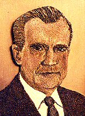

Saturday, June the 10th, 2006
back to: title, date or indexes
You know that feeling you get sometimes, when you wake from a fitful sleep and the first thing that pops into your head is “I really must obtain a portrait of ex-Vice President Spiro Agnew, one grown from wheat or maize or some other crop”? It is not always easy to satisfy such a longing, although of course it may not be a longing or a yearning, it may simply be a flash in the pan whim, one which will evaporate once you get out of bed and plunge your head into ice cold water. Indeed, by the time you sit down to your breakfast sausages, the very idea may seem absurd, and you can get on with your day untroubled by such thoughts. For some though, there can be a sense of desperation, an absolute need that must be assuaged. This can be a very debilitating condition.
Luckily, help is at hand, if one is able to divert one's desires from the ex-Vice President to his boss, President Richard Milhous Nixon. All one need do is copy the technique used by Lillian Colton, who won the Blue Ribbon Best In Show at the 1969 Minnesota State Fair with her portrait of Tricky Dicky grown from seeds of timothy, brome grass, canola, and birdsfoot trefoil. How simple is that?
